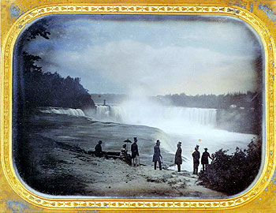

talking history | syllabi | students | teachers | puzzle | about us
 |
||||
|
Scholars In Action presents case studies that demonstrate how scholars interpret different kinds of historical evidence. This untitled daguerreotype of Niagara Falls was taken in 1853 by Platt Babbitt and reflects an era when the expansion of railroads and the rise of middle-class occupations enabled some Americans to enjoy leisure travel. The daguerreotype process, the earliest form of photography, involved the painstaking manipulation of light, chemicals, and copper plates. Daguerreotypes were made public in 1839 and quickly became a popular medium in the United States for a growing middle-class eager to document themselves and their surroundings. While daguerreotypes could not be mass produced, they often served as the basis for newspaper illustrations that reached large numbers of Americans. Before you move to the next page examine this daguerreotype yourself. What do you see? How has the photographer framed the image-what is included? Who might have seen this photograph, and in what context? Published online July 2002. Cite as: Frank Goodyear, "Analyzing Photographs," History Matters: The U.S. Survey Course on the Web, http://historymatters.gmu.edu/mse/sia/photo.htm, July 2002. |
||||